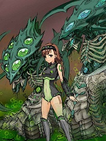

某虫群御坂的综漫之旅
泽洛斯的御坂

简介
第一卷：星际争霸一（已完成），第二卷战锤40K第一次虫巢入侵（不知道战锤的可跳过），第三卷自由之翼（正在进行中） 对虫群而言，杀戮，吞噬是无比正常自然的事情… 但也因此只能收获孤独与敌意… 对主巢心智而言，无视食物的感受应该如同本能… 但是… “我真正想吃的并不是这些啊…”
打开原始网站
刚才看到一个图片突然灵感乍现
旧卷全家福（完整版）
更新通知
唤醒
泽洛斯的日常：（1）风水轮流转
泽洛斯的日常：(2)远方的二姐/幻想与现实
插图
微笑面对.....
嗨，英雄们
坟头人物卡（泽洛斯）
第一章 泽洛斯的御坂
第二章 母巢上的对话
第三章 远征
第四章 威严的主宰
第五章 阿巴瑟的作死日常
第六章 科普鲁星区抵达
第七章 玛.萨拉之行
第八章 潜行的泽洛斯
第九章 安提卡主星战役（上）
第十章 轮回的真相
第十一章 保险
第十二章 安提卡主星战役（下）
第十三章 蒙利斯的狩猎（上）
第十四章 蒙利斯的狩猎（下）
第十五章 注定的碰撞
第十六章 塔爹教你做虫
第十七章 命运的启程（1）
第十八章 命运的启程（2）
第十九章 命运的启程（3）
第二十章 命运的启程（4）第二更
第二十一章 命运的启程（5）
第二十二章 命运的启程（6）
第二十三章 命运的启程（7）
第二十四章 永不复返（1）
第二十五章 永不复返（2）
第二十六章 永不复返（3）
第二十七章 永不复返（4）
前传：轮回的观测者（上）
第二十八章 永不复返（5）
第二十九章 永不复返（6）
第三十章 永不复返（7）
第三十一章 永不复返（8）
第三十二章 永不复返（9）
第三十三章 永不复返（10)
第三十四章 永不复返（11）（二更）
第三十五章 永不复返（完）
第三十六章 选择的未来（1）
第三十七章 选择的未来（2）
第三十八章 选择的未来（3）
第三十九章 选择的未来（4）
第四十章 选择的未来（完）
第四十一章 远征之末，艾尔之殇（1）
第四十二章 远征之末，艾尔之殇（2）
第四十三章 远征之末，艾尔之殇
第四十四章 主宰之陨
第四十五章 灯塔下的阴影
第四十六章 阿卡姆孤儿院
第四十七章 the first crash
第四十八章 继承之人
第四十九章 阴谋浮现
第五十章 罗宾？@丑爷@撬棍…
第五十一章 巢城之暗（1）
第五十二章 独行者与流浪者的会面
第五十三章 漂流者与独行者（完）
第五十四章 巢城之暗（2）
第五十五章 巢城之暗（3）
第五十六章 巢城之暗（4）
第五十七章 巢城之暗（5）
第五十八章 肮脏的虫巢交易（上）
第五十九章 肮脏的虫巢交易（下）
第六十章 我家孩子就乖巧多了
第六十一章 主宰我不做人了！
第六十二章 暴君养成
第六十三章 最后的日常
第六十四章 皇帝升天节（1）
第六十五章 皇帝升天节（2）
第六十六章 皇帝升天节（3）
第六十七章 皇帝升天节（4）
第六十八章 皇帝升天节（5）
第六十九章 皇帝升天节（6）
第七十章 皇帝升天节（7）
第七十一章 皇帝升天节（8）
第七十二章 皇帝升天节（9）
第七十三章 意料之外的帷幕（上）【修改完备】
第七十四章 吞噬之影
第七十五章 无法预测之命运
第七十六章 意料之外的帷幕（下）
第七十七章 【第五更的正文】不速之客
第七十八章 废船上的和谐日常
第七十九章 四万八千年前的旅行
第八十章 无法改变的命运（上）
第八十一章 无法改变之命运（中）
第八十二章 无法改变之命运（下）
第八十三章 怪物与神明
第八十四章 托付未来（30K结束）
第八十五章 真相（上）
第八十六章 真相（下）
第八十七章 真实之人来到万物归一者前
第八十八章 叛逆的泽洛斯（1）
第八十九章 野生的神奇宝贝玩家出现了
第九十章 我可是专业的
第九十一章 第一次虫巢入侵（1）
第九十二章 第一次虫巢入侵（2）
第一章 归来的复仇者
第二章 最后的脑虫
第三章 自由序章
第四章 要搞大新闻的二人组和吃货
第五章 虫群家暴现场（上）
第六章 虫群家暴现场（中）
第七章 虫群家暴现场（下）
第八章 【第二更】休伯利安的美好日常（大雾）
第⑨章 【第三更】大撤退
第十章 虫巢的日常
第十一章 依旧和谐的休伯利安
第十二章 芙杜拉日常爆黑历史时间
第十三章 大爆发
第十四章 自由在召唤你，芬利先生！
第十五章 不存在的解药
第十六章 依旧和平的休伯利安
第十七章 芙杜拉我们走！
第十八章 芙丽奥莎我们走
第十九章 回归的预言（上）
番外 坟头枢纽的泽洛斯永不为奴
第二十章 回归的预言（中）
第二十一章 回归的预言（下）
第二十二章 扭曲虚空充满善意
第二十三章 泽洛斯是个优秀的战士
第二十四章 塔桑尼斯的毁灭（上）
第二十五章 塔桑尼斯的毁灭（中）
第二十六章 塔桑尼斯的毁灭（下）+时空枢纽小剧场
第二十七章 25人M泽洛斯之怒（1）
第二十八章 25人M泽洛斯之怒（2）
第二十九章 25M泽洛斯之怒（3）
关于时空枢纽可以公开的部分
异变结束当然就是宴会啦~
第三十章 艾尔的伤痛（1）
第三十一章 艾尔的伤痛（2）
第三十二章 艾尔的伤痛（3）
第三十三章 艾尔的伤痛（4）
第三十四章 艾尔的伤痛（5）
插图
第三十五章 艾尔的伤痛（6）
第三十六章 艾尔的伤痛（7）
第三十七章 艾尔的伤痛（8）
第三十八章 艾尔的伤痛（9）
序章
第一章 选择（第一更）
第二章 降临（第二更）
插图
第三章 仇恨
第四章 各方的行动
第五章 预兆
插图：抓奸二人组
第六章 waaaagh？（一更）
第七章 和蔼可亲的祖父（二更）
第八章 斯雷恩的升格者
第九章 拉克西尔仪式（上）
第十章 拉克西尔仪式（中）
第十一章 拉克西尔仪式（下）
第十二章 历史的真相（上）
第十三章 历史的真相（中）
第十四章 历史的真相（下）
插图：时空枢纽的家庭聚餐
第十五章 亡命天涯
第十六章 万世骗局（序）
第十七章 万世骗局（1）
第十八章 战争使者：欧克娜
第十九章 战争使者：泰伦
第二十章 新仇旧恨
第二十一章 归来者（上）
第二十二章 归来者（中）
第二十三章 归来者（下）
第二十四章 深空的回响（上）
第二十五章 （二更警告）平行宇宙：至高.达拉姆
第二十六章 深空的回响（中）
泽洛斯人物卡
第二十七章 深空的回响（下）
第二十八章 卡亚迪尔的覆灭（上）
关于去学园都市的脑洞
序章
第一章 今天又收到奇怪头颅的血神大人
第二章 那些年亚空间的扛把子们
第三章 我们K党就这样打！我们K党只会这样打！
第四章 不存在的邪神大战
第五章 那些年无人知晓的邪神黑历史
第六章 只有亚空间知道的红色相薄
第七章 检测到在途的曲线忠诚
插图：虚假的和平
第八章 不存在的交易
第九章 安宁祥和泰拉星
第十章 人才辈出K大魔（联动警告）
第十一章 K大魔从不套路（上）
第一章 梦
第二章 梦醒
第三章 真实
第四章 孽缘（第二更哦）
第五章 噩梦
第六章 第二梦
第七章 觉悟
第八章 死而复生者（二更）
第九章 受苦的恶党先生
第十章 狂欢（第二更）
第十一章 推销（第三更）
第十二章 谁才是反派啊混蛋！
第十三章 手术
第十四章 御坂军团
军团介绍：雷铸者
第十五章 姐妹
第十六章 测试
雷铸者（插图）
第十七章 绝对能力者计划 （1）
第十八章 绝对能力者计划（2）
第十九章 绝对能力者（3）
第二十章 绝对能力者计划（4）
第二十一章 绝对能力者计划（？）
第二十二章 番外：御坂们的暗黑圣战日记（1）
第二十三章 番外：御坂们的暗黑圣战（2）